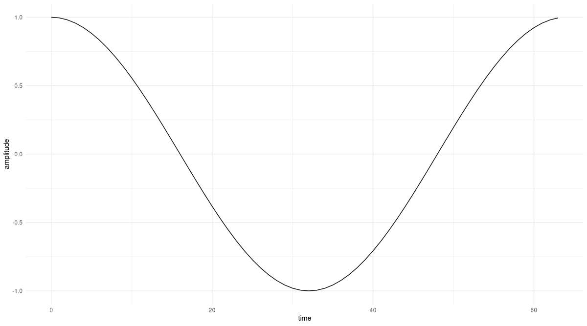
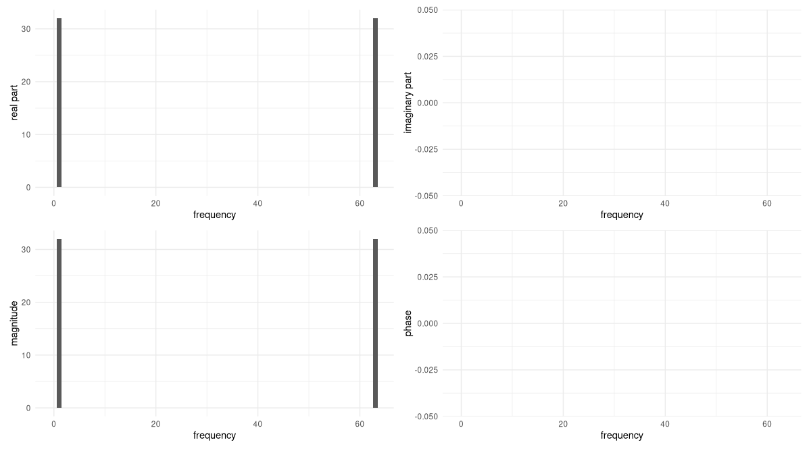
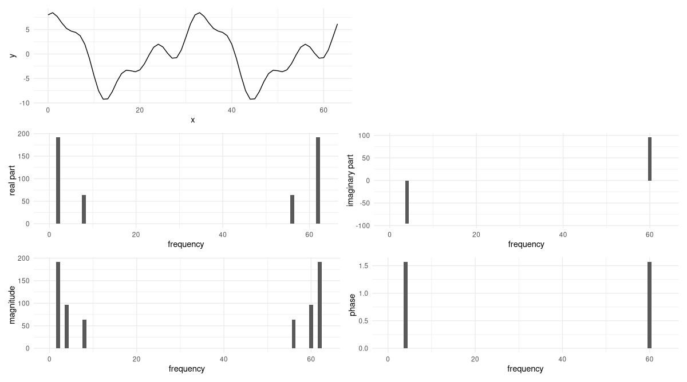
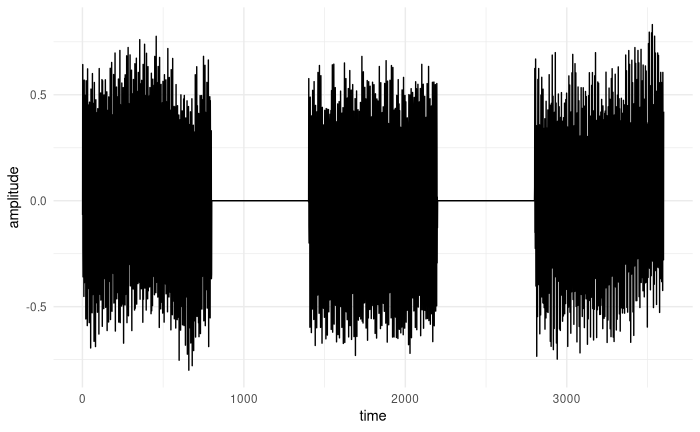
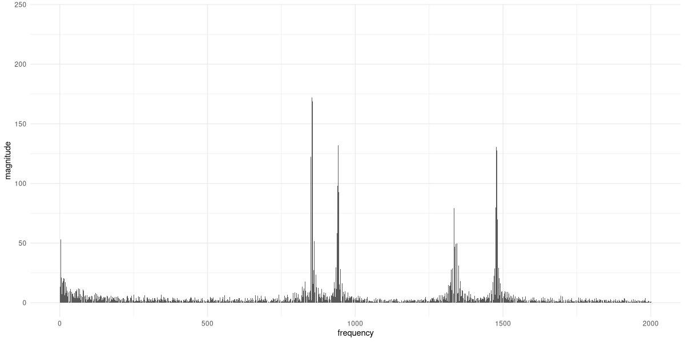

library(torch)
library(ggplot2)
library(patchwork)
N <- 64
sample_positions <- 0:(N - 1)
frequency <- function(k, N) {
(2 * pi / N) * k
}
x <- torch_cos(frequency(1, N) * sample_positions)26 Exploring the Discrete Fourier Transform (DFT)
This is the first chapter dedicated to the Fourier Transform, but it’s not the first time we’re encountering it. In the convolution chapter I mentioned, in passing, that the desired outcome is often more economically achieved in the Fourier domain, with convolution turning into multiplication. What’s more, we actually made use of the DFT in the chapter on audio classification. There, a call to torchaudio’s transform_spectrogram() triggered the computation of a whole bunch of Fourier Transforms, on a set of overlapping time windows constructed from the original input sequence.
In this chapter, we won’t content ourselves with purely calling the torch-provided functions. Instead, we’d like to get a feeling for what’s actually going on. To that purpose, we explore the ideas underlying Fourier analysis, and – in a straightforward, literal way – translate them into torch. In the subsequent chapter, building on the understanding we’ll have gained, we will then improve on performance by implementing one of the algorithms subsumed under the family of Fast Fourier Transforms (FFTs).
26.1 Understanding the output of torch_fft_fft()
Our explorations take off hands-on: We call the main function associated with the (forward) Fourier Transform, torch_fft_fft() 1, and see if we can make sense of its output.
As we care about actual understanding, we start from the simplest possible example signal, a pure cosine that performs one revolution over the complete sampling period.
26.1.1 Starting point: A cosine of frequency 1
The way we set things up, there will be sixty-four samples; the sampling period thus equals N = 64. The content of frequency(), the below helper function used to construct the signal, reflects how we represent the cosine. Namely:
\[ f(x) = cos(\frac{2 \pi}{N} \ k \ x) \]
Here \(x\) values progress over time (or space), and \(k\) is the frequency index. A cosine is periodic with period \(2 \pi\); so if we want it to first return to its starting state after sixty-four samples, and \(x\) runs between zero and sixty-three, we’ll want \(k\) to be equal to \(1\). Like that, we’ll reach the initial state again at position \(x = \frac{2 \pi}{64} * 1 * 64\).
Let’s quickly confirm this did what it was supposed to (fig. 26.1):
df <- data.frame(x = sample_positions, y = as.numeric(x))
ggplot(df, aes(x = x, y = y)) +
geom_line() +
xlab("time") +
ylab("amplitude") +
theme_minimal()
Now that we have the input signal, torch_fft_fft() computes for us the Fourier coefficients, that is, the importance of the various frequencies present in the signal. The number of frequencies considered will equal the number of sampling points: So \(X\) will be of length sixty-four as well.
(In our example, you’ll notice that the second half of coefficients will equal the first in magnitude.2 This is the case for every real-valued signal. In such cases, you could call torch_fft_rfft() instead, which yields “nicer” (in the sense of shorter) vectors to work with. Here though, I want to explain the general case, since that’s what you’ll find done in most expositions on the topic.)
Ft <- torch_fft_fft(x)Even with the signal being real, the Fourier coefficients are complex numbers. There are four ways to inspect them. The first is to extract the real part:
real_part <- Ft$real
as.numeric(real_part) %>% round(5)[1] 0 32 0 0 0 0 0 0 0 0 0 0 0 0 0 0 0 0 0 0 0 0 0 0 0 0 0 0
[29] 0 0 0 0 0 0 0 0 0 0 0 0 0 0 0 0 0 0 0 0 0 0 0 0 0 0 0 0
[57] 0 0 0 0 0 0 0 32Only a single coefficient is non-zero, the one at position 1. (We start counting from zero, and may discard the second half, as explained above.)
Now looking at the imaginary part, we find it is zero throughout:
imag_part <- Ft$imag
as.numeric(imag_part) %>% round(5)[1] 0 0 0 0 0 0 0 0 0 0 0 0 0 0 0 0 0 0 0 0 0 0 0 0 0 0 0 0
[29] 0 0 0 0 0 0 0 0 0 0 0 0 0 0 0 0 0 0 0 0 0 0 0 0 0 0 0 0
[57] 0 0 0 0 0 0 0 0At this point we know that there is just a single frequency present in the signal, namely, that at \(k = 1\). This matches (and it better had to) the way we constructed the signal: namely, as accomplishing a single revolution over the complete sampling period.
Since, in theory, every coefficient could have non-zero real and imaginary parts, often what you’d report is the magnitude (the square root of the sum of squared real and imaginary parts):
magnitude <- torch_abs(Ft)
as.numeric(magnitude) %>% round(5)[1] 0 32 0 0 0 0 0 0 0 0 0 0 0 0 0 0 0 0 0 0 0 0 0 0 0 0 0 0
[29] 0 0 0 0 0 0 0 0 0 0 0 0 0 0 0 0 0 0 0 0 0 0 0 0 0 0 0 0
[57] 0 0 0 0 0 0 0 32Unsurprisingly, these values exactly reflect the respective real parts.
Finally, there’s the phase, indicating a possible shift of the signal (a pure cosine is unshifted). In torch, we have torch_angle() complementing torch_abs(), but we need to take into account roundoff error here. We know that in each but a single case, the real and imaginary parts are both exactly zero; but due to finite precision in how numbers are presented in a computer, the actual values will often not be zero. Instead, they’ll be very small. If we take one of these “fake non-zeroes” and divide it by another, as happens in the angle calculation, big values can result. To prevent this from happening, our custom implementation rounds both inputs before triggering the division.
phase <- function(Ft, threshold = 1e5) {
torch_atan2(
torch_abs(torch_round(Ft$imag * threshold)),
torch_abs(torch_round(Ft$real * threshold))
)
}
as.numeric(phase(Ft)) %>% round(5)[1] 0 0 0 0 0 0 0 0 0 0 0 0 0 0 0 0 0 0 0 0 0 0 0 0 0 0 0 0
[29] 0 0 0 0 0 0 0 0 0 0 0 0 0 0 0 0 0 0 0 0 0 0 0 0 0 0 0 0
[57] 0 0 0 0 0 0 0 0As expected, there is no phase shift in the signal.
Let’s visualize what we found (fig. 26.2).
create_plot <- function(x, y, quantity) {
df <- data.frame(
x_ = x,
y_ = as.numeric(y) %>% round(5)
)
ggplot(df, aes(x = x_, y = y_)) +
geom_col() +
xlab("frequency") +
ylab(quantity) +
theme_minimal()
}
p_real <- create_plot(
sample_positions,
real_part,
"real part"
)
p_imag <- create_plot(
sample_positions,
imag_part,
"imaginary part"
)
p_magnitude <- create_plot(
sample_positions,
magnitude,
"magnitude"
)
p_phase <- create_plot(
sample_positions,
phase(Ft),
"phase"
)
p_real + p_imag + p_magnitude + p_phase
It’s fair to say that we have no reason to doubt what torch_fft_fft() has done. But with a pure sinusoid like this, we can understand exactly what’s going on by computing the DFT ourselves, by hand. Doing this now will significantly help us later, when we’re writing the code.
26.1.2 Reconstructing the magic
One caveat about this section. With a topic as rich as the Fourier Transform, and an audience who I imagine to vary widely on a dimension of math and sciences education, my chances to meet your expectations, dear reader, must be very close to zero. Still, I want to take the risk. If you’re an expert on these things, you’ll anyway be just scanning the text, looking out for pieces of torch code. If you’re moderately familiar with the DFT, you may still like being reminded of its inner workings. And – most importantly – if you’re rather new, or even completely new, to this topic, you’ll hopefully take away (at least) one thing: that what seems like one of the greatest wonders of the universe (assuming there is a reality somehow corresponding to what goes on in our minds) may well be a wonder, but neither “magic” nor a thing reserved to the initiated.
In a nutshell, the Fourier Transform is a basis transformation. In the case of the DFT – the Discrete Fourier Transform, where time and frequency representations both are finite vectors, not functions – the new basis looks like this:
\[ \begin{aligned} &\mathbf{w}^{0n}_N = e^{i\frac{2 \pi}{N}* 0 * n} = 1\\ &\mathbf{w}^{1n}_N = e^{i\frac{2 \pi}{N}* 1 * n} = e^{i\frac{2 \pi}{N} n}\\ &\mathbf{w}^{2n}_N = e^{i\frac{2 \pi}{N}* 2 * n} = e^{i\frac{2 \pi}{N}2n}\\& ... \\ &\mathbf{w}^{(N-1)n}_N = e^{i\frac{2 \pi}{N}* (N-1) * n} = e^{i\frac{2 \pi}{N}(N-1)n}\\ \end{aligned} \]
Here \(N\), as before, is the number of samples (64, in our case); thus, there are \(N\) basis vectors. With \(k\) running through the basis vectors, they can be written:
\[ \mathbf{w}^{kn}_N = e^{i\frac{2 \pi}{N}k n} \tag{26.1}\]
Like \(k\), \(n\) runs from \(0\) to \(N-1\). To understand what these basis vectors are doing, it is helpful to temporarily switch to a shorter sampling period, \(N = 4\), say. If we do so, we have four basis vectors: \(\mathbf{w}^{0n}_N\), \(\mathbf{w}^{1n}_N\), \(\mathbf{w}^{2n}_N\), and \(\mathbf{w}^{3n}_N\). The first one looks like this:
\[ \mathbf{w}^{0n}_N = \begin{bmatrix} e^{i\frac{2 \pi}{4}* 0 * 0}\\ e^{i\frac{2 \pi}{4}* 0 * 1}\\ e^{i\frac{2 \pi}{4}* 0 * 2}\\ e^{i\frac{2 \pi}{4}* 0 * 3} \end{bmatrix} = \begin{bmatrix} 1\\ 1\\ 1\\ 1\\ \end{bmatrix} \]
The second, like so:
\[ \mathbf{w}^{1n}_N = \begin{bmatrix} e^{i\frac{2 \pi}{4}* 1 * 0}\\ e^{i\frac{2 \pi}{4}* 1 * 1}\\ e^{i\frac{2 \pi}{4}* 1 * 2}\\ e^{i\frac{2 \pi}{4}* 1 * 3} \end{bmatrix} = \begin{bmatrix} 1\\ e^{i\frac{\pi}{2}}\\ e^{i \pi}\\ e^{i\frac{3 \pi}{4}} \end{bmatrix} = \begin{bmatrix} 1\\ i\\ -1\\ -i\\ \end{bmatrix} \]
This is the third:
\[ \mathbf{w}^{2n}_N = \begin{bmatrix} e^{i\frac{2 \pi}{4}* 2 * 0}\\ e^{i\frac{2 \pi}{4}* 2 * 1}\\ e^{i\frac{2 \pi}{4}* 2 * 2}\\ e^{i\frac{2 \pi}{4}* 2 * 3} \end{bmatrix} = \begin{bmatrix} 1\\ e^{i\pi}\\ e^{i 2 \pi}\\ e^{i\frac{3 \pi}{2}} \end{bmatrix} = \begin{bmatrix} 1\\ -1\\ 1\\ -1\\ \end{bmatrix} \]
And finally, the fourth:
\[ \mathbf{w}^{3n}_N = \begin{bmatrix} e^{i\frac{2 \pi}{4}* 3 * 0}\\ e^{i\frac{2 \pi}{4}* 3 * 1}\\ e^{i\frac{2 \pi}{4}* 3 * 2}\\ e^{i\frac{2 \pi}{4}* 3 * 3} \end{bmatrix} = \begin{bmatrix} 1\\ e^{i\frac{3 \pi}{2}}\\ e^{i 3 \pi}\\ e^{i\frac{9 \pi}{2}} \end{bmatrix} = \begin{bmatrix} 1\\ -i\\ -1\\ i\\ \end{bmatrix} \]
We can characterize these four basis vectors in terms of their “speed”: how fast they move around the unit circle. To do this, we simply look at the rightmost column vectors, where the final calculation results appear. The values in that column correspond to positions pointed to by the revolving basis vector at different points in time. This means that looking at a single “update of position”, we can see how fast the vector is moving in a single time step.
Looking first at \(\mathbf{w}^{0n}_N\), we see that it does not move at all. \(\mathbf{w}^{1n}_N\) goes from \(1\) to \(i\) to \(-1\) to \(-i\); one more step, and it would be back where it started. That’s one revolution in four steps, or a step size of \(\frac{\pi}{2}\). Then \(\mathbf{w}^{2n}_N\) goes at double that pace, moving a distance of \(\pi\) along the circle. That way, it ends up completing two revolutions overall. Finally, \(\mathbf{w}^{3n}_N\) achieves three complete loops, for a step size of \(\frac{3 \pi}{2}\).
The thing that makes these basis vectors so useful is that they are mutually orthogonal. That is, their dot product is zero:
\[ \langle \mathbf{w}^{kn}_N, \mathbf{w}^{ln}_N \rangle \ = \ \sum_{n=0}^{N-1} ({e^{i\frac{2 \pi}{N}k n}})^* e^{i\frac{2 \pi}{N}l n} = \ \sum_{n=0}^{N-1} ({e^{-i\frac{2 \pi}{N}k n}})e^{i\frac{2 \pi}{N}l n} = 0 \tag{26.2}\]
Let’s take, for example, \(\mathbf{w}^{2n}_N\) and \(\mathbf{w}^{3n}_N\). Indeed, their dot product evaluates to zero.
\[ \begin{bmatrix} 1 & -1 & 1 & -1\\ \end{bmatrix} \begin{bmatrix} 1\\ -i\\ -1\\ i\\ \end{bmatrix} = 1 + i + (-1) + (-i) = 0 \]
Now, we’re about to see how the orthogonality of the Fourier basis substantially simplifies the calculation of the DFT. Did you notice the similarity between these basis vectors and the way we wrote the example signal? Here it is again:
\[ f(x) = cos(\frac{2 \pi}{N} k x) \]
If we manage to represent this function in terms of the basis vectors \(\mathbf{w}^{kn}_N = e^{i\frac{2 \pi}{N}k n}\), the inner product between the function and each basis vector will be either zero (the “default”) or a multiple of one (in case the function has a component matching the basis vector in question). Luckily, sines and cosines can easily be converted into complex exponentials. In our example, this is how that goes:3
\[ \begin{aligned} \mathbf{x}_n &= cos(\frac{2 \pi}{64} n) \\ &= \frac{1}{2} (e^{i\frac{2 \pi}{64} n} + e^{-i\frac{2 \pi}{64} n}) \\ &= \frac{1}{2} (e^{i\frac{2 \pi}{64} n} + e^{i\frac{2 \pi}{64} 63n}) \\ &= \frac{1}{2} (\mathbf{w}^{1n}_N + \mathbf{w}^{63n}_N) \end{aligned} \]
Here the first step directly results from Euler’s formula4, and the second reflects the fact that the Fourier coefficients are periodic, with frequency -1 being the same as 63, -2 equaling 62, and so on.
Now, the \(k\)th Fourier coefficient is obtained by projecting the signal onto basis vector \(k\).
Due to the orthogonality of the basis vectors, only two coefficients will not be zero: those for \(\mathbf{w}^{1n}_N\) and \(\mathbf{w}^{63n}_N\). They are obtained by computing the inner product between the function and the basis vector in question, that is, by summing over \(n\). For each \(n\) ranging between \(0\) and \(N-1\), we have a contribution of \(\frac{1}{2}\), leaving us with a final sum of \(32\) for both coefficients. For example, for \(\mathbf{w}^{1n}_N\):
\[ \begin{aligned} X_1 &= \langle \mathbf{w}^{1n}_N, \mathbf{x}_n \rangle \\ &= \langle \mathbf{w}^{1n}_N, \frac{1}{2} (\mathbf{w}^{1n}_N + \mathbf{w}^{63n}_N) \rangle \\ &= \frac{1}{2} * 64 \\ &= 32 \end{aligned} \]
And analogously for \(X_{63}\).
Now, looking back at what torch_fft_fft() gave us, we see we were able to arrive at the same result. And we’ve learned something along the way.
As long as we stay with signals composed of one or more basis vectors, we can compute the DFT in this way. At the end of the chapter, we’ll develop code that will work for all signals, but first, let’s see if we can dive even deeper into the workings of the DFT. Three things we’ll want to explore:
What would happen if frequencies changed – say, a melody were sung at a higher pitch?
What about amplitude changes – say, the music were played twice as loud?
What about phase – e.g., there were an offset before the piece started?
In all cases, we’ll call torch_fft_fft() only once we’ve determined the result ourselves.
And finally, we’ll see how complex sinusoids, made up of different components, can still be analyzed in this way, provided they can be expressed in terms of the frequencies that make up the basis.
26.1.3 Varying frequency
Assume we quadrupled the frequency, giving us a signal that looked like this:
\[ \mathbf{x}_n = cos(\frac{2 \pi}{N}*4*n) \]
Following the same logic as above, we can express it like so:
\[ \mathbf{x}_n = \frac{1}{2} (\mathbf{w}^{4n}_N + \mathbf{w}^{60n}_N) \]
We already see that non-zero coefficients will be obtained only for frequency indices \(4\) and \(60\). Picking the former, we obtain
\[ \begin{aligned} X_4 &= \langle \mathbf{w}^{4n}_N, \mathbf{x}_n \rangle \\ &= \langle \mathbf{w}^{4n}_N, \frac{1}{2} (\mathbf{w}^{4n}_N + \mathbf{w}^{60n}_N) \rangle \\ &= 32 \end{aligned} \]
For the latter, we’d arrive at the same result.
Now, let’s make sure our analysis is correct. The following code snippet contains nothing new; it generates the signal, calculates the DFT, and plots them both (fig. 26.3).
x <- torch_cos(frequency(4, N) * sample_positions)
plot_ft <- function(x) {
df <- data.frame(x = sample_positions, y = as.numeric(x))
p_signal <- ggplot(df, aes(x = x, y = y)) +
geom_line() +
xlab("time") +
ylab("amplitude") +
theme_minimal()
# in the code, I'm using Ft instead of X because not
# all operating systems treat variables as case-sensitive
Ft <- torch_fft_fft(x)
p_real <- create_plot(
sample_positions,
Ft$real,
"real part"
)
p_imag <- create_plot(
sample_positions,
Ft$imag,
"imaginary part"
)
p_magnitude <- create_plot(
sample_positions,
torch_abs(Ft),
"magnitude"
)
p_phase <- create_plot(
sample_positions,
phase(Ft),
"phase"
)
(p_signal | plot_spacer()) /
(p_real | p_imag) /
(p_magnitude | p_phase)
}
plot_ft(x)
This does indeed confirm our calculations.
A special case arises when signal frequency rises to the highest one “allowed”, in the sense of being detectable without aliasing. That will be the case at one half of the number of sampling points. Then, the signal will look like so:
\[ \mathbf{x}_n = \frac{1}{2} (\mathbf{w}^{32n}_N + \mathbf{w}^{32n}_N) \]
Consequently, we end up with a single coefficient, corresponding to a frequency of 32 revolutions per sample period, of double the magnitude (64, thus). Here are the signal and its DFT (fig. 26.4):
{kind=link}
x <- torch_cos(frequency(32, N) * sample_positions)
plot_ft(x)
26.1.4 Varying amplitude
Now, let’s think about what happens when we vary amplitude. For example, say the signal gets twice as loud. Now, there will be a multiplier of 2 that can be taken outside the inner product. In consequence, the only thing that changes is the magnitude of the coefficients.
Let’s verify this. The modification is based on the example we had before the very last one, with four revolutions over the sampling period (fig. 26.5):
x <- 2 * torch_cos(frequency(4, N) * sample_positions)
plot_ft(x)
So far, we have not once seen a coefficient with non-zero imaginary part. To change this, we add in phase.
26.1.5 Adding phase
Changing the phase of a signal means shifting it in time. Our example signal is a cosine, a function whose value is 1 at \(t=0\). (That also was the – arbitrarily chosen – starting point of the signal.)
Now assume we shift the signal forward by \(\frac{\pi}{2}\). Then the peak we were seeing at zero moves over to \(\frac{\pi}{2}\); and if we still start “recording” at zero, we must find a value of zero there. An equation describing this is the following. For convenience, we assume a sampling period of \(2 \pi\) and \(k=1\), so that the example is a simple cosine:
\[ f(x) = cos(x - \phi) \]
The minus sign may look unintuitive at first. But it does make sense: We now want to obtain a value of 1 at \(x=\frac{\pi}{2}\), so \(x - \phi\) should evaluate to zero. (Or to any multiple of \(\pi\).) Summing up, a delay in time will appear as a negative phase shift.
Now, we’re going to calculate the DFT for a shifted version of our example signal. But if you like, take a peek at the phase-shifted version of the time-domain picture now already. You’ll see that a cosine, delayed by \(\frac{\pi}{2}\), is nothing else than a sine starting at 0.
To compute the DFT, we follow our familiar-by-now strategy. The signal now looks like this:
\[ \mathbf{x}_n = cos(\frac{2 \pi}{N}*4*x - \frac{\pi}{2}) \]
First, we express it in terms of basis vectors:
\[ \begin{aligned} \mathbf{x}_n &= cos(\frac{2 \pi}{64} 4 n - \frac{\pi}{2}) \\ &= \frac{1}{2} (e^{i\frac{2 \pi}{64} 4n - \frac{pi}{2}} + e^{i\frac{2 \pi}{64} 60n - \frac{pi}{2}}) \\ &= \frac{1}{2} (e^{i\frac{2 \pi}{64} 4n} e^{-i \frac{\pi}{2}} + e^{i\frac{2 \pi}{64} 60n} e^{i\frac{pi}{2}}) \\ &= \frac{1}{2} (e^{-i \frac{\pi}{2}} \mathbf{w}^{4n}_N + e^{i \frac{\pi}{2}} \mathbf{w}^{60n}_N) \end{aligned} \]
Again, we have non-zero coefficients only for frequencies \(4\) and \(60\). But they are complex now, and both coefficients are no longer identical. Instead, one is the complex conjugate of the other. First, \(X_4\):
\[ \begin{aligned} X_4 &= \langle \mathbf{w}^{4n}_N, \mathbf{x}_n \rangle \\ &=\langle \mathbf{w}^{4n}_N, \frac{1}{2} (e^{-i \frac{\pi}{2}} \mathbf{w}^{4n}_N + e^{i \frac{\pi}{2}} \mathbf{w}^{60n}_N) \rangle\\ &= 32 *e^{-i \frac{\pi}{2}} \\ &= -32i \end{aligned} \]
And here, \(X_{60}\):
\[ \begin{aligned} X_{60} &= \langle \mathbf{w}^{60n}_N, \mathbf{x}_N \rangle \\ &= 32 *e^{i \frac{\pi}{2}} \\ &= 32i \end{aligned} \]
As usual, we check our calculation using torch_fft_fft() (fig. 26.6).
x <- torch_cos(frequency(4, N) * sample_positions - pi / 2)
plot_ft(x)
For a pure sine wave, the non-zero Fourier coefficients are imaginary. The phase shift in the coefficients, reported as \(\frac{\pi}{2}\), reflects the time delay we applied to the signal.
Finally – before we write some code – let’s put it all together, and look at a wave that has more than a single sinusoidal component.
26.1.6 Superposition of sinusoids
The signal we construct may still be expressed in terms of the basis vectors, but it is no longer a pure sinusoid. Instead, it is a linear combination of such:
\[ \begin{aligned} \mathbf{x}_n &= 3 sin(\frac{2 \pi}{64} 4n) + 6 cos(\frac{2 \pi}{64} 2n) +2cos(\frac{2 \pi}{64} 8n) \end{aligned} \]
I won’t go through the calculation in detail, but it is no different from the previous ones. You compute the DFT for each of the three components, and assemble the results. Without any calculation, however, there’s quite a few things we can say:
- Since the signal consists of two pure cosines and one pure sine, there will be four coefficients with non-zero real parts, and two with non-zero imaginary parts. The latter will be complex conjugates of each other.
- From the way the signal is written, it is easy to locate the respective frequencies, as well: The all-real coefficients will correspond to frequency indices 2, 8, 56, and 62; the all-imaginary ones to indices 4 and 60.
- Finally, amplitudes will result from multiplying with \(\frac{64}{2}\) the scaling factors obtained for the individual sinusoids.
Let’s check (fig. 26.7):
x <- 3 * torch_sin(frequency(4, N) * sample_positions) +
6 * torch_cos(frequency(2, N) * sample_positions) +
2 * torch_cos(frequency(8, N) * sample_positions)
plot_ft(x)
Now, how do we calculate the DFT for less convenient signals?
26.2 Coding the DFT
Fortunately, we already know what has to be done. We want to project the signal onto each of the basis vectors. In other words, we’ll be computing a bunch of inner products. Logic-wise, nothing changes: The only difference is that in general, it will not be possible to represent the signal in terms of just a few basis vectors, like we did before. Thus, all projections will actually have to be calculated. But isn’t automation of tedious tasks one thing we have computers for?
Let’s start by stating input, output, and central logic of the algorithm to be implemented. As throughout this chapter, we stay in a single dimension. The input, thus, is a one-dimensional tensor, encoding a signal. The output is a one-dimensional vector of Fourier coefficients, of the same length as the input, each holding information about a frequency. The central idea is: To obtain a coefficient, project the signal onto the corresponding basis vector.
To implement that idea, we need to create the basis vectors, and for each one, compute its inner product with the signal. This can be done in a loop. Surprisingly little code is required to accomplish the goal:
dft <- function(x) {
n_samples <- length(x)
n <- torch_arange(0, n_samples - 1)$unsqueeze(1)
Ft <- torch_complex(
torch_zeros(n_samples), torch_zeros(n_samples)
)
for (k in 0:(n_samples - 1)) {
w_k <- torch_exp(-1i * 2 * pi / n_samples * k * n)
dot <- torch_matmul(w_k, x$to(dtype = torch_cfloat()))
Ft[k + 1] <- dot
}
Ft
}To test the implementation, we can take the last signal we analysed, and compare with the output of torch_fft_fft().
Ft <- dft(x)
torch_round(Ft$real) %>% as.numeric()
torch_round(Ft$imag) %>% as.numeric()[1] 0 0 192 0 0 0 0 0 64 0 0 0 0 0 0 0 0 0 0 0 0 0 0 0 0 0 0 0
[29] 0 0 0 0 0 0 0 0 0 0 0 0 0 0 0 0 0 0 0 0 0 0 0 0 0 0 0 0
[57] 64 0 0 0 0 0 192 0
[1] 0 0 0 0 -96 0 0 0 0 0 0 0 0 0 0 0 0 0 0 0 0 0 0 0 0 0 0 0
[29] 0 0 0 0 0 0 0 0 0 0 0 0 0 0 0 0 0 0 0 0 0 0 0 0 0 0 0 0
[57] 0 0 0 0 96 0 0 0Reassuringly – if you look back – the results are the same.
Above, did I say “little code”? In fact, a loop is not even needed. Instead of working with the basis vectors one-by-one, we can stack them in a matrix. Then each row will hold the conjugate of a basis vector, and there will be \(N\) of them. The columns correspond to positions \(0\) to \(N-1\); there will be \(N\) of them as well. For example, this is how the matrix would look for \(N=4\):
\[ \mathbf{W}_4 = \begin{bmatrix} e^{-i\frac{2 \pi}{4}* 0 * 0} & e^{-i\frac{2 \pi}{4}* 0 * 1} & e^{-i\frac{2 \pi}{4}* 0 * 2} & e^{-i\frac{2 \pi}{4}* 0 * 3}\\ e^{-i\frac{2 \pi}{4}* 1 * 0} & e^{-i\frac{2 \pi}{4}* 1 * 1} & e^{-i\frac{2 \pi}{4}* 1 * 2} & e^{-i\frac{2 \pi}{4}* 1 * 3}\\ e^{-i\frac{2 \pi}{4}* 2 * 0} & e^{-i\frac{2 \pi}{4}* 2 * 1} & e^{-i\frac{2 \pi}{4}* 2 * 2} & e^{-i\frac{2 \pi}{4}* 2 * 3}\\ e^{-i\frac{2 \pi}{4}* 3 * 0} & e^{-i\frac{2 \pi}{4}* 3 * 1} & e^{-i\frac{2 \pi}{4}* 3 * 2} & e^{-i\frac{2 \pi}{4}* 3 * 3}\\ \end{bmatrix} \tag{26.3}\]
Or, evaluating the expressions:
\[ \mathbf{W}_4 = \begin{bmatrix} 1 & 1 & 1 & 1\\ 1 & -i & -1 & i\\ 1 & -1 & 1 & -1\\ 1 & i & -1 & -i\\ \end{bmatrix} \]
With that modification, the code looks a lot more elegant:
dft_vec <- function(x) {
n_samples <- length(x)
n <- torch_arange(0, n_samples - 1)$unsqueeze(1)
k <- torch_arange(0, n_samples - 1)$unsqueeze(2)
mat_k_m <- torch_exp(-1i * 2 * pi / n_samples * k * n)
torch_matmul(mat_k_m, x$to(dtype = torch_cfloat()))
}As you can easily verify, the result is the same.
Before we move on to the next chapter – and the Fast Fourier Transform – we should test our implementation on something more complex.
26.3 Fun with sox
sox is a command line tool for processing audio, most often (I guess) used to quickly play some sound file, for resampling, or to convert between different file formats. However, it can generate sound, as well! (Admittedly, the syntax is not the most intuitive.) Here is the command I used in generating the test sound analysed below:
sox --combine concatenate \
"|sox -r 4000 -n -p synth 0.2 \
sine 941 sine 1336 pinknoise remix -" \
"|sox -r 4000 -n -p synth 0.2 \
sine 852 sine 1336 pinknoise remix - pad 0.15 0.15" \
"|sox -r 4000 -n -p synth 0.2 \
sine 852 sine 1477 pinknoise remix -" \
resources/dft-dial.wavThe result is a concatenation of three distinct sound events, of duration 0.2 seconds, separated by slightly shorter periods of silence (pad 0.15 0.15). Each sound event is a superposition of three components: two sine waves of different frequency, and pink noise. The frequency combinations used are not accidental: They represent the encoding of the numbers 0, 8, and 9 in the Dual-tone multi-frequency signaling (DTMF) system, respectively.
For this signal, what would we expect to see in a spectrogram? We expect to see three distinct phases, clearly separated by “nothing”, that each show two dominant frequencies. The first and the second should have one frequency in common; the same holds for phases two and three. In addition, for all three phases, we should see contributions from all other frequencies, with lower frequencies having stronger impact than higher ones. (That’s what defines pink noise.)
At this point, allow me to call sox one last time. If you’ve been using that program before, did you know that it can create spectrograms? This one-liner uses all the default settings; yet the result has all the information we want (fig. 26.8):
sox resources/dial.wav -n spectrogram \
-m -l -w kaiser -o dial-spectrogram.png
sox resources/dial.wav -n spectrogram -m -l -w kaiser -o dial-spectrogram.png.Now, let’s load this file into R, making use of torchaudio, a package we already know from the audio classification chapter.
library(torchaudio)
wav <- tuneR_loader("resources/dft-dial.wav")
wavWaveMC Object
Number of Samples: 3600
Duration (seconds): 0.9
Samplingrate (Hertz): 4000
Number of channels: 1
PCM (integer format): TRUE
Bit (8/16/24/32/64): 32From all the information stored in tuneR’s WaveMC object, we need just the sampling rate and the data itself.
waveform_and_sample_rate <- transform_to_tensor(wav)
waveform <- waveform_and_sample_rate[[1]]
sample_rate <- waveform_and_sample_rate[[2]]
dim(waveform)[1] 1 3600As expected, a plot of amplitude over time does not reveal too much (fig. 26.9):
df <- data.frame(
x = 1:dim(waveform)[2],
y = as.numeric(waveform$squeeze(1))
)
ggplot(df, aes(x = x, y = y)) +
geom_line() +
xlab("time") +
ylab("amplitude") +
theme_minimal()
Now, we will compute the Fourier Transform – twice. First, with torch_fft_fft(), so we know the “truth”. Then, using our own dft(). For both, we will display the magnitudes of the lower half of the spectrum, that is, all frequencies up to the Nyquist rate. Finally, with help of torch_fft_ifft(), we will make sure we can regenerate the time domain representation from what dft() gave us.
In order to create a meaningful plot, there’s one additional step to be taken. So far, the magnitudes displayed in the frequency-domain plots have simply been ordered by \(k\), the index of the basis vector in question. In fact, there was no concept of a real-world frequency. But now, we want to see frequencies treated the way we conceptualize them: as number of cycles per second, measured in Hertz.
To be able to do the conversion, we need the sampling rate, which we already saw is 4000 Hertz. We then map the lower-half sample indices (bins_below_nyquist) to real-world frequencies, multiplying by the ratio of sampling rate to overall number of samples:
num_samples <- dim(waveform)[2]
nyquist_cutoff <- num_samples / 2 + 1
bins_below_nyquist <- 1:nyquist_cutoff
frequencies_per_bin <- sample_rate / num_samples
real_world_frequencies <- frequencies_per_bin *
bins_below_nyquistHere, then, is the magnitude plot for torch_fft_fft() (fig. 26.10):
dial_fft <- torch_fft_fft(waveform)$squeeze()
p_magnitude <- create_plot(
real_world_frequencies,
torch_abs(dial_fft)[1:nyquist_cutoff], "magnitude"
)
p_magnitude
torch_fft_fft() . Displayed are the magnitudes of frequencies below the Nyquist rate.The spectrum reflects the noise component in the signal, but the four peaks (which we know to be located at 852, 941, 1336, and 1477 Hertz) are clearly visible.
Now, does our hand-written code yield the same result (fig. 26.11)?
dial_dft <- dft(waveform$squeeze())
p_magnitude <- create_plot(
real_world_frequencies,
torch_abs(dial_fft)[1:nyquist_cutoff], "magnitude"
)
p_magnitude
It does. Finally, let’s use the Inverse DFT to recreate the signal (fig. 26.12).
reconstructed <- torch_fft_ifft(dial_dft)
df <- data.frame(
x = 1:num_samples,
y = as.numeric(reconstructed$real)
)
ggplot(df, aes(x = x, y = y)) +
geom_line() +
xlab("time") +
ylab("amplitude") +
theme_minimal()
dft().And there we are. We’ve implemented the DFT ourselves, and learned quite a bit on our way. For the Fast Fourier Transform, the topic of the next chapter, the plan is exactly the same.
Its counterpart – that takes the Fourier representation and yields a time-domain signal – is called
torch_fft_ifft()(withifftstanding for Inverse Fourier Transform).↩︎Expanding on this a bit: For real-valued signals, the magnitudes as well as the real parts of corresponding coefficients are equal, while the phases and the imaginary parts are conjugated. In other words, the coefficients are complex conjugates of each other. We’ll see this in later examples.↩︎
I’ll be writing \(\mathbf{x}_n\) instead of \(f(x)\) from now on to indicate that we’re working with discrete samples, not the continuous function itself.↩︎
Euler’s formula relates complex exponentials to sines and cosines, stating that \(e^{i \theta} = cos \theta + i sin \theta\).↩︎